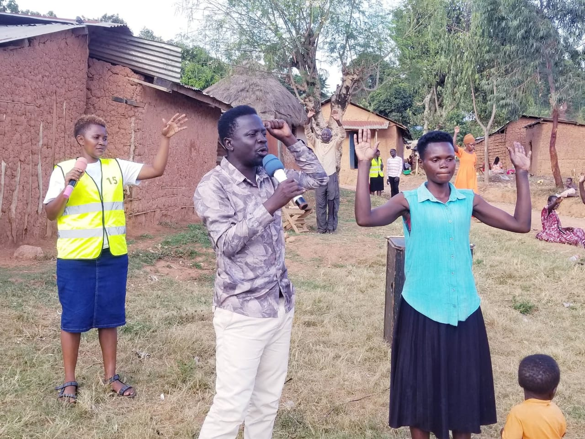
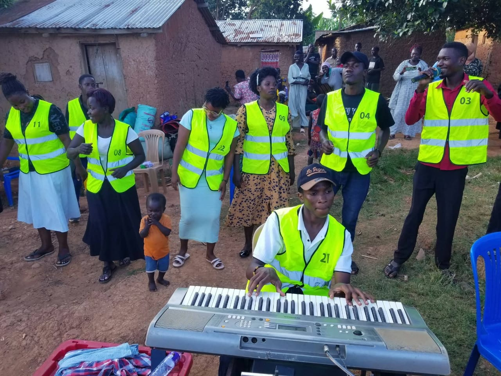
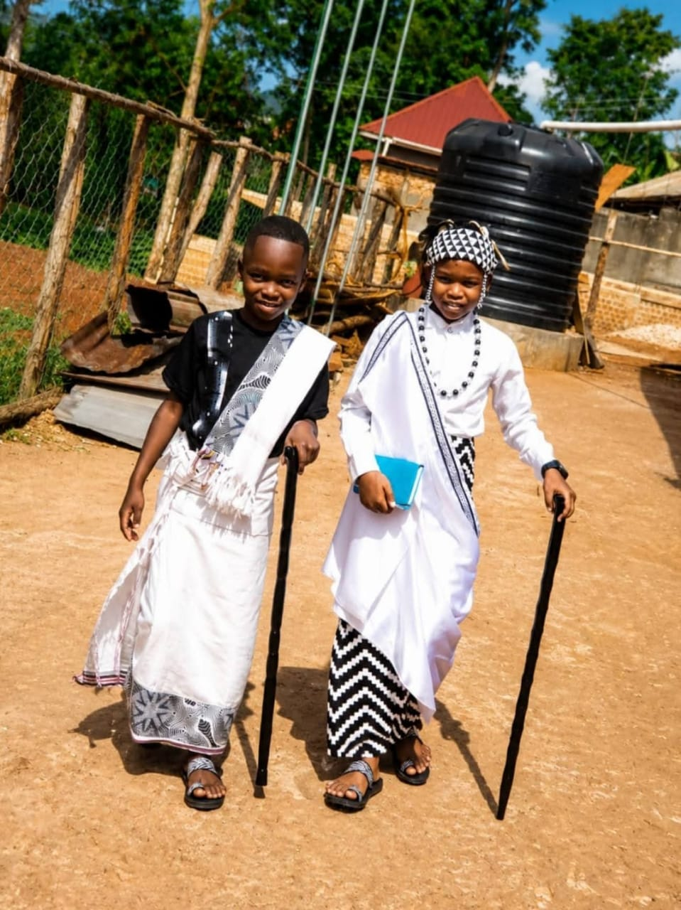

Seek the lost.
Develop leaders.
To seek the lost, disciple the found, and develop leaders who will fuel a movement of exponential growth and lasting impact.
WHO WE ARE & WHAT WE BELIEVE
Equipping leaders to bring discipleship and mission together, locally and globally.
REST CHURCH MINISTRIES
Rest Church is a channel of elevating leaders to function holistically, equipping them to integrate discipleship and mission.
To seek the lost, disciple the found, and develop leaders who will fuel a movement of exponential growth and lasting impact.
We evangelize, disciple, equip, and send locally and globally.
We seek to reach people with the Gospel, establish believers in the faith, equip them for ministry, develop leaders, and send workers into local and global mission.

EVANGELISMReaching the lost
COMMUNITY MISSIONServing together
FELLOWSHIP & SERVICEFaith in communityOUR CALLING, PUT INTO PRACTICE
Rest Church shall seek to:
THE WAY WE SERVE
Four foundational values guide the ministry of Rest Church.
We are grounded in the authority and truth of Scripture.
We depend on God through consistent prayer and communion with Him.
We intentionally develop believers into mature followers of Christ.
We welcome, serve, and care for people with the love of Christ.
“Our members are not merely militant; they are military—soldiers of Christ, ready to spend and be spent for the sake of the Gospel.”
WHAT WE BELIEVE
Foundational beliefs that shape our faith, worship, discipleship, and mission.
 REST CHURCH · MISSION & FELLOWSHIP
REST CHURCH · MISSION & FELLOWSHIP
We believe in the redemptive power of the cross of Jesus Christ. The cross is the foundation of our faith, the center of our message, and the source of our transformation. We are Cross Point, a church whose teachings and life are rooted in Christ and His finished work.
We believe in one true and living God, eternally existing in three distinct Persons: God the Father, God the Son, and God the Holy Spirit. These three are one God, equal in divine nature, glory, and power.
We believe in water baptism as a biblical act of obedience and a public declaration of faith in Jesus Christ, symbolizing the believer’s identification with His death, burial, and resurrection.
We believe in biblical stewardship, tithing, and generous giving as expressions of worship, obedience, gratitude, and faithfulness to God. We believe that believers are called to honor God with their resources and support the advancement of His Kingdom.
We believe in the Great Commission of our Lord Jesus Christ to preach the Gospel to all nations, seek the lost, disciple the found, and raise believers who will faithfully make disciples and advance the Kingdom of God.
SERVING THE VISION
The leaders serving Rest Church and its ministries.

Provides spiritual oversight, vision, direction, and leadership to the church. He preaches and teaches the Word, equips leaders, and guides the church in fulfilling its vision and mission.
Church Administrator. Oversees church operations, activities, records, communications, and organization across departments.
Women’s Ministry Leader. Supports spiritual growth, discipleship, fellowship, and the empowerment of women.
Children’s Church Leader. Nurtures children through the Word of God, teaching, and age-appropriate discipleship.
Instrumentalists’ Leader. Coordinates the instrumentalists in service of unity, excellence, and church worship.
Media Ministry Leader. Coordinates media production, photography, audiovisual operations, and digital communications.
Youth Church Leader. Guides young people through discipleship, biblical teaching, mentorship, and spiritual development.
WALK WITH US